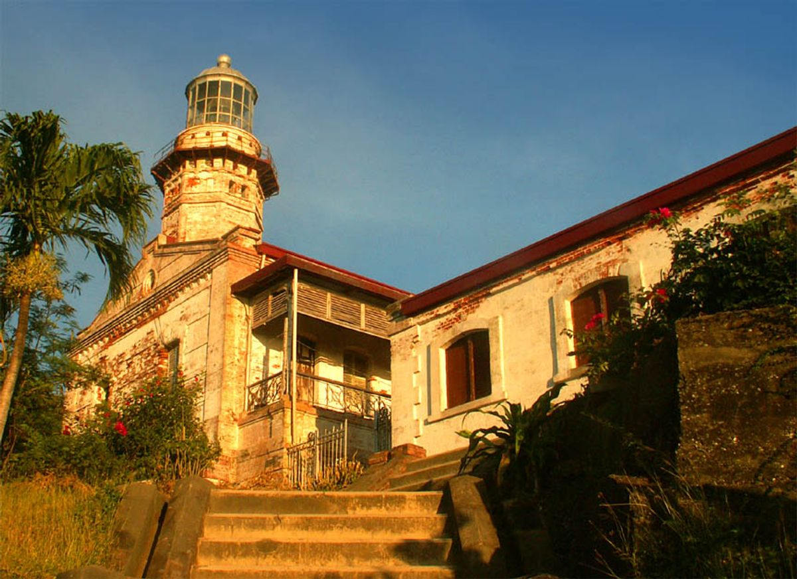
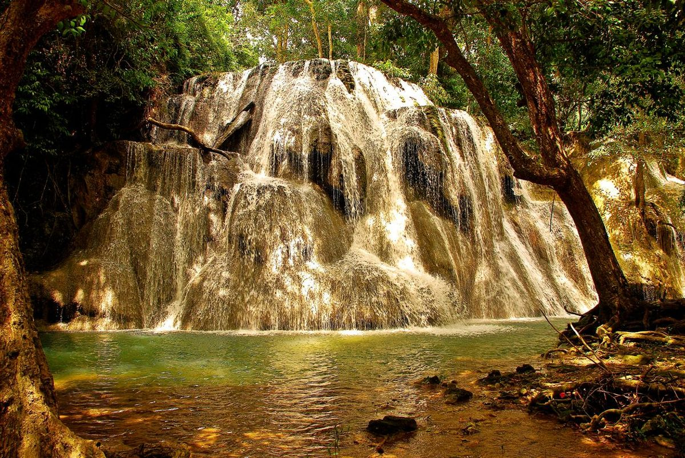
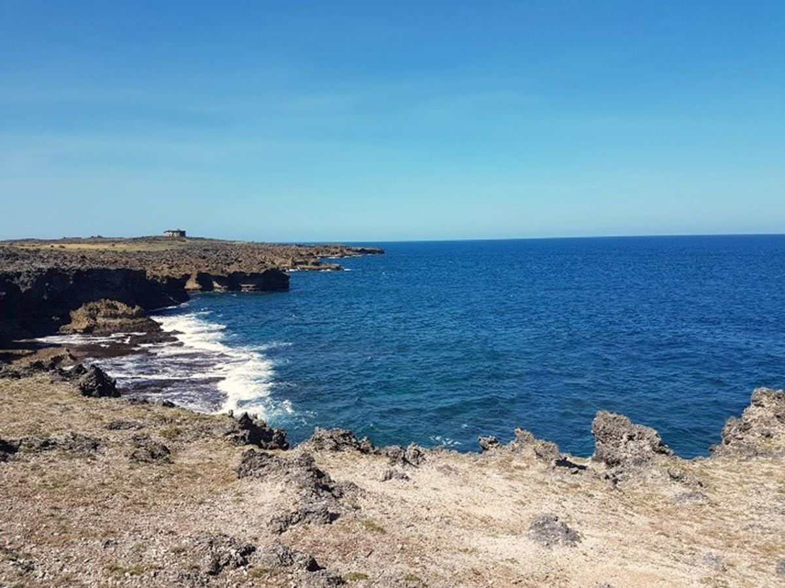
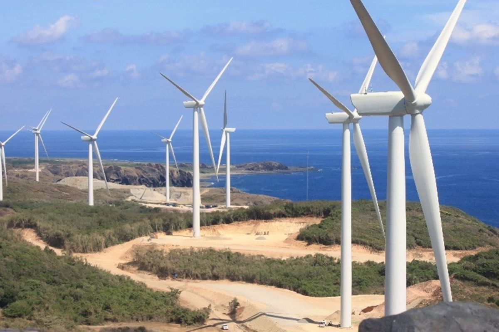
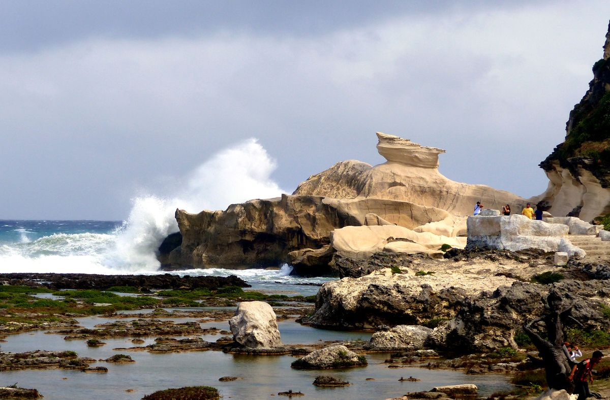
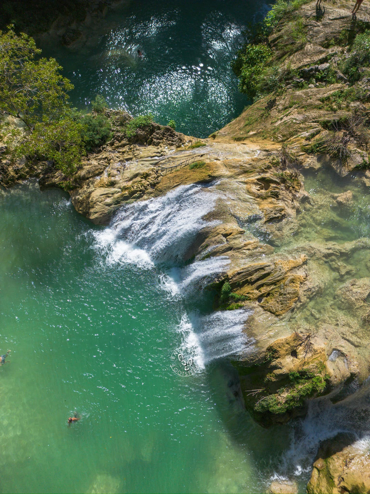

Cape Bojeador Lighthouse
The Cape Bojeador Lighthouse is a 65-foot-tall octagonal stone tower and the oldest operating lighthouse in the Philippines. Built during the Spanish Colonial period, it still guides vessels navigating the West Philippine Sea.
Kaangrian Falls
Kaangrian Falls is a multi-layered waterfall with sparkling pools formed by limestone deposits. Located in Barangay Agaga, it is a must-see natural wonder for its breathtaking beauty and rich biodiversity.
Graciano Cove
Graciano Cove, a hidden gem near Cape Bojeador Lighthouse, is known for its deep blue waters, stunning coastal cliffs, and serene beach lagoon. Perfect for adventurers and nature lovers alike.
Dragon Fruit Farm (REFMAD)

The REFMAD Dragon Fruit Farm in Barangay Paayas offers an immersive farm tourism experience. Visitors can enjoy dragon fruit picking, savor organic products, and relax in its cabanas and swimming pool.
Burgos Wind Farm Adventure Park
The Burgos Wind Farm, the largest in Southeast Asia, is both an adventure park and a renewable energy site. Spanning 600 hectares, it offers stunning views and eco-tourism activities.
Kapurpurawan Rock Formation
This white limestone formation in Barangay Poblacion is a natural masterpiece shaped by the sea and wind. Visitors can enjoy its beauty from a distance while appreciating its geological significance.
Tanap-Avis Falls
Tanap-Avis Falls is a hidden paradise known for its vibrant colors and serene environment. Located in the forest, it offers a tranquil escape for hiking and swimming enthusiasts.